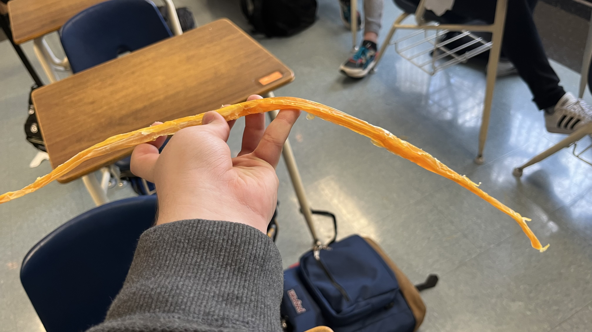
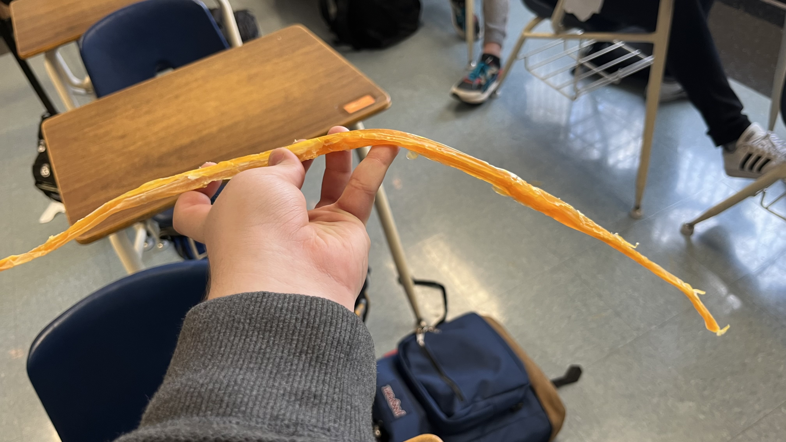

Our project for the final is this: build 4 prototypes and a final build of a sphaghetti bridge with only 20 pieces of spaghetti each and wood glue. And we had to make TinkerCADs, but those don't really matter at this point since our new prototypes are just gonna be 1 improvement and Jonah's design. My partners are Theo (the blond one), Taylor, and Jonah. Our first design was mine: LINE. No, seriously my design was 6 colums of 3 pieces of spaghetti lined up next to each other. The reason for this is because it must hold a bucket of water over a 24" gap. My design ends up at 30". The other 2 pieces of spaghetti were put as support for the middle. After that, we did a slightly different design: cable. We would get the spaghetti and twirl them together into a cable and then just have that go across. It functions differently to the line because it's thicker and a more circular shape. We may or may not have used too much wood glue, but it might not matter later. We tested the two bridges, and they both held a full bucket of water, with the line being better because less wood glue was used on it. They both broke at the edges, where it was being held down. I don't have pictures of the line after the test, and I don't have a video (Theo didn't send it ): ), but I do have some pictures. Also, the 3rd design will be a lot like the 1st, but the 2 extra pieces will be cut in half and put at the top and bottom of the ends.
Line (we put some glue because it got a bit messed up in the storage room): 
